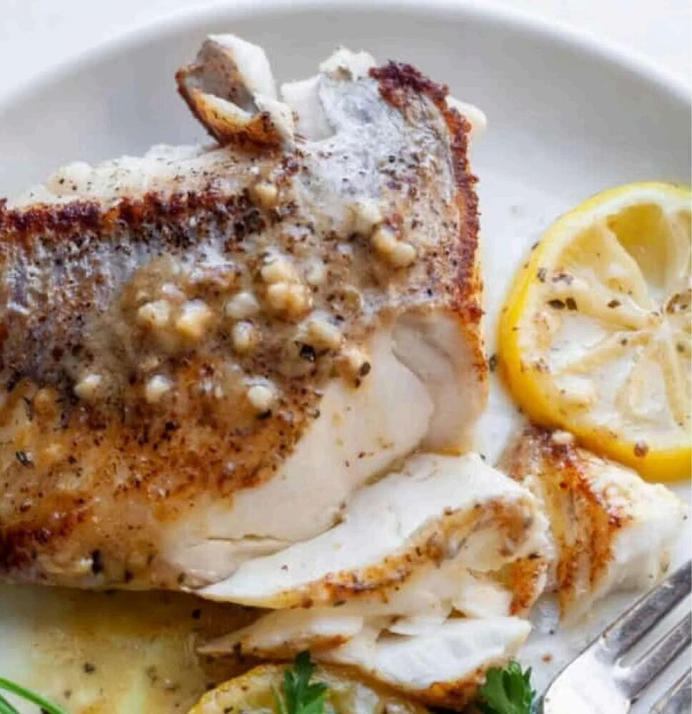

Chilean Seared Sea Bass

Ingredients
- 3/4 lbs Chilean Sea Bass
- 2 tbl Olive oil
- 1/2 stk Butter
- 1 tspn Pureed Garlic
- 1/2 Lemon
- Pepper and Salt to taste
Instructions
- The trick to making a great succulent pan seared sea bass is timing. In a non-stick pan add some olive oil and 2 pads of butter over a medium to high heat (3/4 turn). Season the sea bass, both sides, with pepper and salt.
- As soon as the butter has melted, add the sea bass to the pan, and cook for 3 1/2 minutes, gradually turning down the flame to medium heat (1/2 turn).
- Flip the sea bass, adding another pad of butter, and cooking for an additional 3 minutes.
- Separately and quickly, in a small bowl, microwave 3 tablespoons of butter, and 1 teaspoon of pureed garlic for 45 seconds.
- Quickly plate the sea bass, drizzle the microwaved butter garlic sauce, and squeeze some lemon over the sea bass to taste. Et voila!